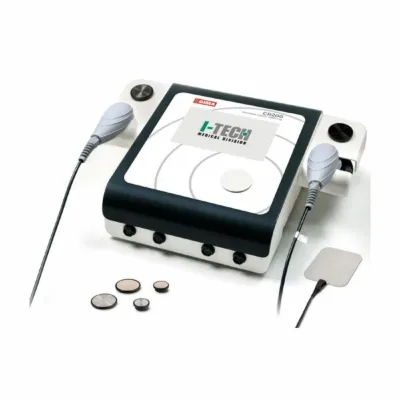

CR 200 TECAR TERAPİYA 2 prob ilə
Qiymət, mövcudluq və çatdırılma müddəti kommersiya təklifində göstərilir.
Təsvir və xüsusiyyətlər
CR 200 — 2 zondlu TECAR terapiyası aparatı.
Diatermiya, həmçinin TECAR terapiyası (tutumlu və rezistiv enerji ötürülməsi) kimi tanınır, təbii sağalma proseslərini stimullaşdırır və hərəkət funksiyasının bərpasını sürətləndirir.
Diatermiya elektromaqnit sahəsinin toxumalarla qarşılıqlı təsiri hesabına toxumalarda daxili istilik əmələ gətirir. İsinmə bərabər idarə olunur. Elektromaqnit təsiri ion cərəyanı yaradır və müalicə sahəsində qan axınını artırır. Bu, iltihabı, ağrını və ödemi azaltmaq üçün lazım olan endogen maddələrin (xüsusilə kortizol və endorfinlərin) ifrazını stimullaşdırır. Rezistiv və tutumlu rejimli yeni CR200 mütəxəssislər üçün müasir, yüksək effektivli və istifadəsi sadə aparatdır.
Hazır proqramlar dərhal işə başlamağa imkan verir. Parametrləri (güc, terapiya müddəti, tutumlu/rezistiv rejim) tapşırığa görə tənzimləyib fərdi proqramlar saxlamaq olar — terapevt istənilən vaxt xəstənin protokoluna qayıda bilər.
Böyük qrafik displey terapiya parametrlərini və iş rejimlərini göstərir.
Menyu dili seçimi: ingilis, fransız, italyan, ispan.
Tutumlu rejim
Keramik örtüklü elektrod (hərəkətli) və qayıdış lövhəsi (sabit). Əsasən yumşaq toxumalar (əzələlər, limfa və damar sistemi) üçün göstərişdir. Üstünlükləri: nöqtəvi təsir, müalicə sahəsinə asan nəzarət.
Rezistiv rejim
İzolyasiyasız elektrod (hərəkətli) və qayıdış lövhəsi (sabit). Müqaviməti yüksək olan toxumalar (sümüklər, oynaqlar, vətərlər, bağlar, sidik kisəsi) üçün göstərişdir. Üstünlükləri: dərin isitmə; fibroz və degenerasiyalı xroniki xəstəliklər.
Əsas göstərişlər:
- dayaq-hərəkət aparatının patologiyaları;
- sümük-oynaq patologiyaları;
- limfedema;
- kəskin və xroniki ağrı.
24 reabilitasiya proqramı: fantom ağrılar, qonartroz, artroz, artrosinovit, bursit, boyun ağrısı, qamçı travması, xondropatiya, əzələ kontrakturası, zədə, əzələ gərginliyi, bağların burxulması, əzələ distrofiyası, oynaq ağrısı, ödem, epikondilit, epitroxleit, ön çarpaz bağ, limfedema, bel ağrısı, meniskopatiya, əzələ cırılması, kəskin tendinit, xroniki tendinit, rotator manjet tendinopatiyası.
10 idman proqramı: əzələ kontrakturası, zədə, əzələlərin bərpası, bağların burxulması, hematoma, vətər zədəsi, masaj, dərin masaj, əzələ dartılması, əzələ cırılması.
Kabinetin və ya şöbənin tam təchizatı lazımdırsa, yazın. Siyahını birlikdə tərtib edək.